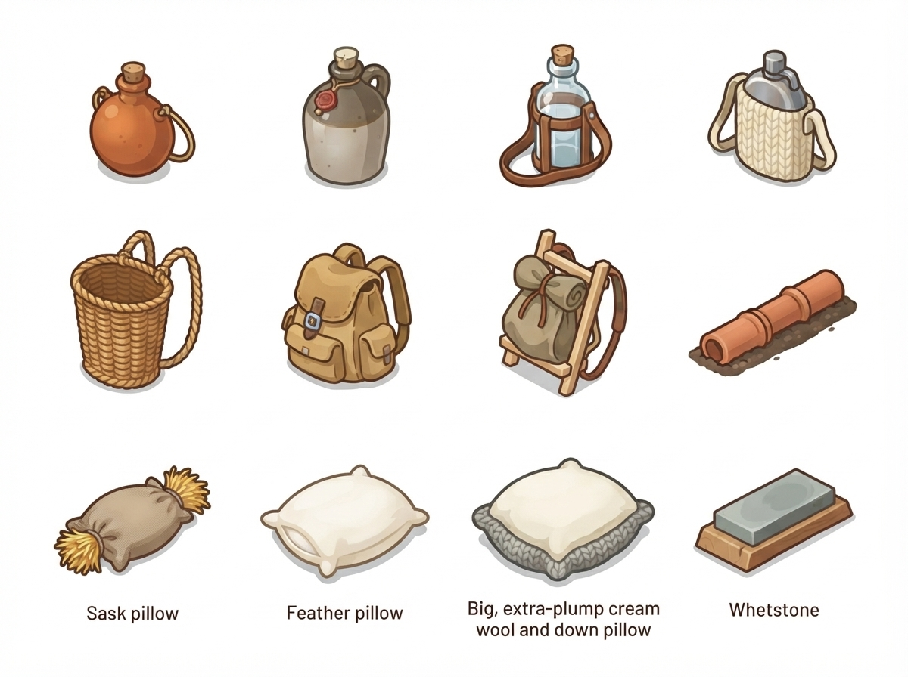
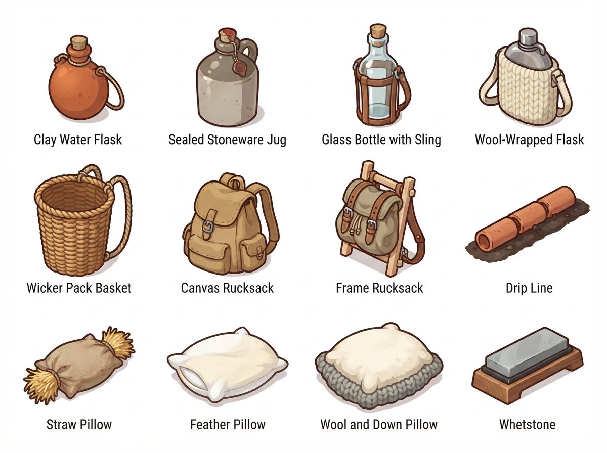

Green frame = the pick used in the game. To swap: python3 .claude/skills/openart-pictures/fetch.py pick sheet67-gear <version>, then import again.


A sprite sheet of exactly 12 separate objects in 3 rows of 4: carrying and resting things of an old-fashioned farm, as item icons, in exactly the art style of reference image 1 (use it only for the style): bright, friendly mobile-game cartoon, thick rounded dark outlines, flat colours with simple cel shading, chunky cute proportions, three-quarter top-down view (isometric, like Hay Day), small soft shadow under each. Plain pure white background, evenly spaced with wide white space between them, none touching, each one solid piece with no loose drops, feathers, sparks, sparkles or motion lines beside it. No text, no letters, no numbers, no captions under the objects, nothing under the objects but white, no frames, no grid lines, no people, no hands, no faces on any object. Every item is seen on its own, like a shop item, from the same angle at about the same size. Row 1, things that hold a drink: (1) clay water flask: a small round brown-orange clay flask with a short neck, a cork stopper and a loop of cord; (2) sealed stoneware jug: a grey-brown glazed stoneware jug with a handle and a wax-sealed stopper; (3) glass bottle with sling: a clear glass bottle with a cork, held in a brown leather strap sling; (4) wool-wrapped flask: a metal flask wrapped in a thick cream knitted wool cover with a strap. Row 2: (5) wicker pack basket: a tall woven wicker basket with two rope shoulder straps; (6) canvas rucksack: a tan canvas rucksack with two shoulder straps and a buckled flap; (7) frame rucksack: a canvas pack tied to a light wooden frame with leather shoulder straps; (8) drip line: three short terracotta clay pipe pieces joined end to end in a straight row lying on a small strip of dark soil. Row 3: (9) straw pillow: a small plain rough sack pillow stuffed with golden straw, tied at both ends with string; (10) feather pillow: a plump white pillow with a soft cream cover; (11) wool and down pillow: a big extra-plump cream pillow with a grey knitted wool edge; (12) whetstone: a flat grey sharpening stone on a small wooden block.